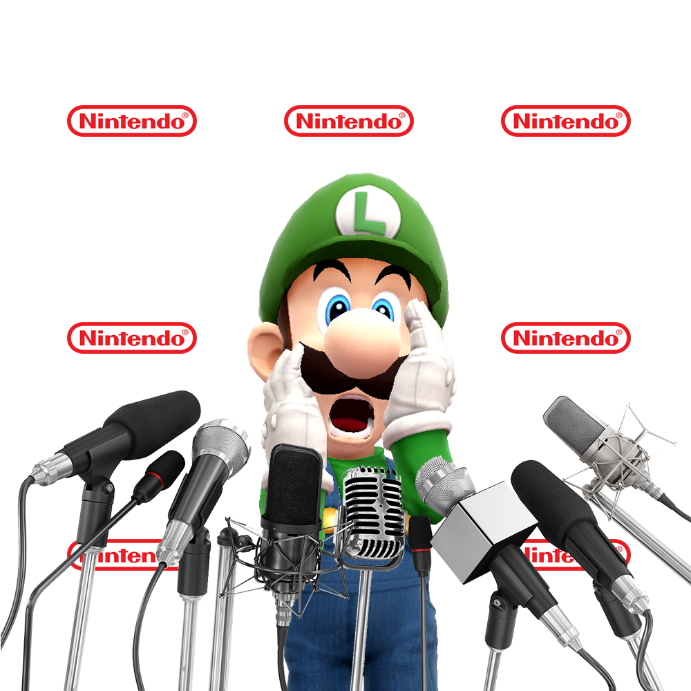
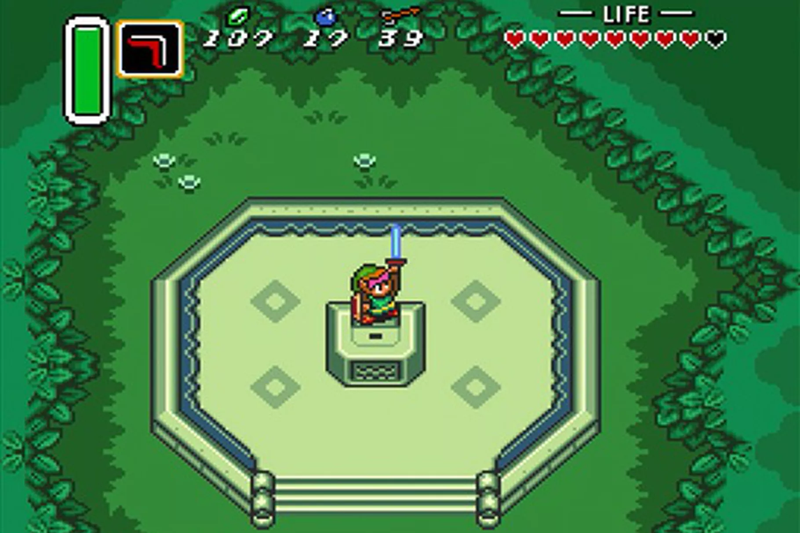

Retro Throwback #72: Donkey Kong
Published 04/10/2020
By Jack Sun
 Today's edition of Retro
Throwback features Nintendo’s arcade classic Donkey Kong-
a fascinating game for all kinds of reasons. In the Eigehties it was
subject to all sorts of battles, as Universal unsuccessfully sued Nintendo
over copyright infringement, while Atari and Coleco clashed over conversion
rights. In the arcades the game has been the battlefield for vicious high
score competitions, featuring stunning victories and astonishing allegations
of cheating, and even inspired the documentary "The King Of Kong".
Today's edition of Retro
Throwback features Nintendo’s arcade classic Donkey Kong-
a fascinating game for all kinds of reasons. In the Eigehties it was
subject to all sorts of battles, as Universal unsuccessfully sued Nintendo
over copyright infringement, while Atari and Coleco clashed over conversion
rights. In the arcades the game has been the battlefield for vicious high
score competitions, featuring stunning victories and astonishing allegations
of cheating, and even inspired the documentary "The King Of Kong".
Donkey Kong himself went on to become a huge gaming star in his own right,
appearing across a variety of platform games and a series of music games
for the GameCube. Oh, and then there’s the small matter of the little bloke
you play as, some guy named Mario. We don’t quite know what happened to him
later on. Incidentally, one of our favourite versions of Donkey Kong is the
excellent Game Boy game, which starts off like the arcade game before
becoming an astonishing original puzzle platformer.
Retro Review #66: Super Mario Bros 2
Published 26/07/2020
By Jack Sun
 Super Mario Bros 2 was a
game I rented early in my NES days. It was quite different from its
predecessor – and this was something my brother and I were not prepared for!
When we rented the game – we couldn’t even get past the first boss no matter
how much we jumped on his head! It was not until months later that we
discovered that Mario needs to “pick up” the eggs shot in order to throw
them back and dispatch Birdo. Nevertheless, over the years. the game has
found its place in my gamers heart as a whimsical, unique NES game that
still manages to be fun to this day!
Super Mario Bros 2 was a
game I rented early in my NES days. It was quite different from its
predecessor – and this was something my brother and I were not prepared for!
When we rented the game – we couldn’t even get past the first boss no matter
how much we jumped on his head! It was not until months later that we
discovered that Mario needs to “pick up” the eggs shot in order to throw
them back and dispatch Birdo. Nevertheless, over the years. the game has
found its place in my gamers heart as a whimsical, unique NES game that
still manages to be fun to this day!
The story is strange – likely because it was a game not originally planned
to be Mario 2! The game starts with Mario (along with Peach, Luigi, and
Toad) finding a door to a dreamworld! Their goal is to free the world of
Subcon from Wart the Evil Toad, who has cursed the world world and its people.
In terms of gameplay, this game is a 2D platforming game like many in the
series. The game does introduce some major changes including picking (and
throwing) vegetables and enemies from the ground in order to dispatch other
enemies. No longer is jumping a means to getting rid of enemies! Jumping is
still a core part of the gameplay and is required to get over chasms and
avoiding enemies. Despite the changes, some familiar Mario tropes are still
here including mushrooms (that increases your health) and Stars (that make
you invincible). New additions include cherries that allow you to play a
slots mini game after each level, and magic potions that open a door to an
opposite dark world that allows you to find the mushrooms. Ultimately, you
must guide Mario or one of his three compatriots (Luigi, Peach, and Toad) to
the end of the stage.
Super Marios Bros 2 is an excellent game that improves substantially over
its predacessor with improved graphics, new gameplay additions, and great
music. If you enjoy 2D platforming games – give this game a try! Overall,
I give this game a 8/10.
BREAKING NEWS: Luigi faces lifetime ban from Super Mario Bros after third
failed drug test
Published 1/04/2020
By Jack Sun
The Nintendo Universe was
shaken to its very core today as news reports surfaced that Luigi had in
fact failed his third drug test. Luigi is the popular plumber from the
well-known video game Super Mario Bros. In the game, the object is to save
Princess Toadstool from the evil dragon Bowser. For years, Luigi has played
in the shadow of his older brother and speculation is rampant that he was
looking to gain a competitive edge against Mario, who was always allowed to
start ahead of him.
According to multiple media reports pertaining to the most recent failed drug
test, Luigi is accused of trading golden coins for anabolic mushrooms and
koopah antler spray while he was in the sewers of the underwater minus world.
Luigi’s older, and of course much more famous brother Mario, spoke first to
the media because he always goes first.
“Thatsah not so good aah,” said Mario. “But let’s aah see if the panel can
overturn his suspension ok now.”
Directly afterwards, Luigi addressed his detractors and talked about his
appeal against the lifetime ban by stating, “I’m a gonna win.”
When pressed for further comment Luigi stuck to his guns.
“Luigi is aahh good yes … I’m a gonna win,” he asserted.
Not even Luigi’s staunchest defenders, Bill Blaster and the Hammer Brothers,
could defend his regrettable actions. In a pre-written statement they claimed
that ever since Luigi fought the False Bowser in Warp World 7 with unlimited
Lives, he just hadn’t been the same.
Previously, Luigi was suspended for three turns from double-player gaming mode
after using too many Starmen in the Underground Fireball Castle World. Also,
Luigi had been sanctioned by the Nintendo governing body after refusing a drug
test when he jumped over the Piranha Plants and onto the top of the flagpole
in the Buzzy Beetle Overworld to get his 5,000 points.
Currently, Luigi is on a leave of absence as he tries to reconcile with his
ex-girlfriend Princess Toadstool, who was recently seen in the tabloids with
Mario. Mario explained the pictures of the two of them taken at 3AM outside
the Mushroom Kingdom by stating that he was merely showing support for a close
personal friend after her latest abduction by Bowser.
Retro Review #65: The Legend of Zelda: A Link to the Past
Published 19/03/2020
By Jack Sun
 I am going to be up-front
with this. The Legend of Zelda: A Link to the Past is my favourite game
ever made. I have been beating it annually for years and have gotten so
good at it that I beat it in one sitting without dying in a couple of hours.
It was the game that spurred my brother and I to buy a Super Nintendo in the
early 90s, so tonight I thought it was as good as time as ever to review it
for my website.
The story is straightforward but sets the stage for a great adventure. The
game starts off with a stormy night and Zelda and the seven maidens of
Hyrule have been captured by the evil Agahnim. Link goes to save them and
it soon becomes apparent that Ganon is trying to free himself from the dark
world. The journey takes Link through two worlds, tons of dungeons, finding
the master sword, and culminates in an epic battle that brings the simple
story to a satisfying conclusion. And while the story does its job well,
it isnt really the reason why people love this game so much!
In terms of gameplay, this is an action/adventure game. You take control of
Link from a top down perspective and direct him across Hyrule as you defeat
enemies, explore dungeons, discover items, and solve puzzles. The B button
utilizes Links’ sword, and the Y button uses special items
(i.e., boomerang), and the A button is the action button that allows Link
to interact with the world like speaking, swimming, lifting things, and
dashing. The game uses a similar progression system as Metroid in that as
Link discovers new items, new areas become accessible on the world map,
which continues until the end of the game! I love this aspect of the game
as it really encourages exploration – and there is much exploration needed
as secrets are abound throught! This system also makes the game hard to put
down as there is always one new area or secret to find!
In summary, The Legend of Zelda: A Link to the Past is the best
action/adventure game I have ever played. It has awesome gameplays, a killer
soundtrack, and packed to the brim with Nintendo charm. If you have never
played this game, you owe it to yourself to go out and play it. While it is
an adventure game, it also has tons of replay value and is so good, I have
been playing through it annually for the past 20 years! I give this game a
perfect final score of 10/10!
Do yourself a favour and buy this classic masterpiece for the NES
on our online store now!